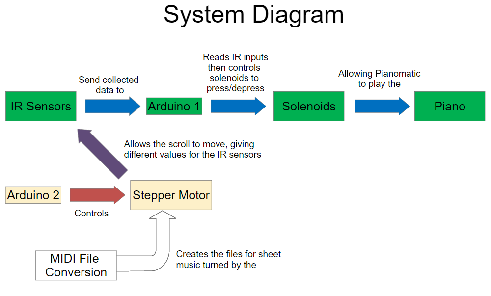

Goals and Project Overview
Starting off, we had 3 end goals for our project: to have a working auto-scrolling sheet of music, to create music and have our project read the music, and to successfully play multiple notes simultaneously. The end system can be seen at a high level in the system diagram in this section. Our project starts with a MIDI file of a piece of music, which we convert with our software to a readable format for Pianomatic. From there, we print out the file and attach it to our scrolled, controlled by our secondary Arduino. This secondary Arduino powers the stepper motor which scrolls the sheet music in front of the IR sensors which are connected to the primary Arduino. The primary Arduino reads in from these sensors, determine which value(s) read by the sensors indicate notes should be played, and then command the corresponding solenoids to either push down or remain at rest. These solenoids are what physically play the piano.

We have accomplished all of our goals through this project, however we recommend to not play multiple notes with the solenoids we used due to heat generated from a higher voltage. With larger solenoids, this will not be a problem if you wish to build our project.